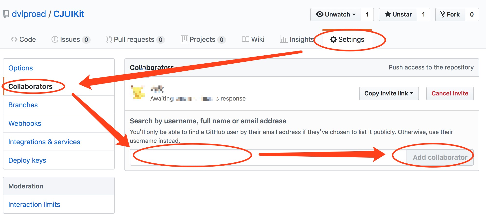
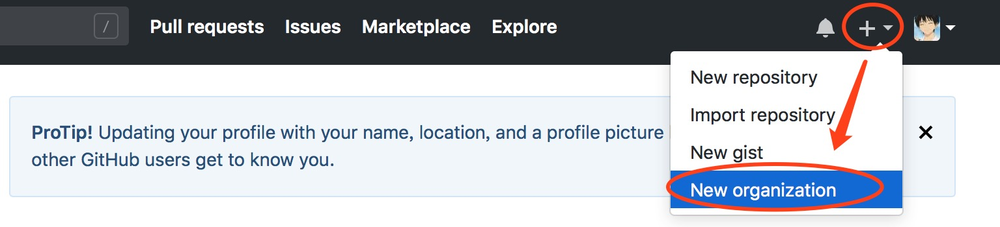

很多朋友在用github管理项目的时候，都是直接使用https url克隆到本地，当然也有有些人使用 SSH url 克隆到本地。然而，为什么绝大多数人会使用https url克隆呢？
这是因为，使用https url克隆对初学者来说会比较方便，复制https url 然后到 git Bash 里面直接用clone命令克隆到本地就好了。而使用 SSH url 克隆却需要在克隆之前先配置和添加好 SSH key 。
因此，如果你想要使用 SSH url 克隆的话，你必须是这个项目的拥有者。否则你是无法添加 SSH key 的。
1、前者可以随意克隆github上的项目，而不管是谁的；而后者则是你必须是你要克隆的项目的拥有者或管理员，且需要先添加 SSH key ，否则无法克隆。
2、https url 在push的时候是需要验证用户名和密码的；而 SSH 在push的时候，是不需要输入用户名的，如果配置SSH key的时候设置了密码，则需要输入密码的，否则直接是不需要输入密码的。
进入~/.ssh目录，检查是否已经存在 id_rsa.pub 或 id_dsa.pub 文件，如果文件已经存在，那么你可以跳过步骤2，直接进入步骤3。
$ ssh-keygen -t rsa -C "your_email@example.com"
代码参数含义：
-t 指定密钥类型，默认是 rsa ，可以省略。
-C 设置注释文字，比如邮箱。
-f 指定密钥文件存储文件名。
以上代码省略了 -f 参数，因此，运行上面那条命令后会让你输入一个文件名，用于保存刚才生成的 SSH key 代码，如：
Generating public/private rsa key pair.
# Enter file in which to save the key (/c/Users/you/.ssh/id_rsa): [Press enter]
当然，你也可以不输入文件名，使用默认文件名（推荐），那么就会生成 id_rsa 和 id_rsa.pub 两个秘钥文件。
接着又会提示你输入两次密码（该密码是你push文件的时候要输入的密码，而不是github管理者的密码），
当然，你也可以不输入密码，直接按回车。那么push的时候就不需要输入密码，直接提交到github上了，如：
Enter passphrase (empty for no passphrase):
# Enter same passphrase again:
接下来，就会显示如下代码提示，如：
Your identification has been saved in /c/Users/you/.ssh/id_rsa.
# Your public key has been saved in /c/Users/you/.ssh/id_rsa.pub.
# The key fingerprint is:
# 01:0f:f4:3b:ca:85:d6:17:a1:7d:f0:68:9d:f0:a2:db your_email@example.com
当你看到上面这段代码的收，那就说明，你的 SSH key 已经创建成功，你只需要添加到github的SSH key上就可以了。
进入账号的SSH key添加处，将id_rsa.pub 文件的内容复制上去添加即可。(记得 SSH key 代码的前后不要留有空格或者回车。)
在git Bash 中输入以下代码
$ ssh -T git@github.com
当你输入以上代码时，会有一段警告代码，如：
The authenticity of host 'github.com (207.97.227.239)' can't be established.
# RSA key fingerprint is 16:27:ac:a5:76:28:2d:36:63:1b:56:4d:eb:df:a6:48.
# Are you sure you want to continue connecting (yes/no)?
这是正常的，你输入 yes 回车既可。如果你创建 SSH key 的时候设置了密码，接下来就会提示你输入密码，如：
Enter passphrase for key ‘/c/Users/Administrator/.ssh/id_rsa’:
当然如果你密码输错了，会再要求你输入，知道对了为止。
注意：输入密码时如果输错一个字就会不正确，使用删除键是无法更正的。
密码正确后你会看到下面这段话，如：
Hi username! You've successfully authenticated, but GitHub does not
# provide shell access.
如果用户名是正确的,你已经成功设置SSH密钥。如果你看到 “access denied” ，者表示拒绝访问，那么你就需要使用 https 去访问，而不是 SSH 。
github上的开源项目是人人都可download下来修改，并贡献源码的，但不是无原则的，如果开源作者提交的代码，被任何人都download下来修改并且随意提交的话，那会有很多恶意修改源码的行为出现，也就没有github良好的开源生态, 那么github上是怎么修改别人的源码并且提交，让自己成为同一项目的源码贡献者呢。有一下三种机制：
首先他会进入自己项目的settings里，如下：

然后在Collaborators里面搜索你的github用户名，add进去，之后你会在github上受到一个invitation提示，确认一下之后，你就可以在任何IDE里面用git clone到本地，URI选择这个github的开源地址就行，相当于这个github地址作为一个git的远程代码服务器。
找到这个开源项目，点击右上角fork按钮，然后在你自己的github里面就会出现这个项目，修改完之后，在你的github里点击pull request, 之后原作者会收到这个请求，通过之后你就贡献了自己的源码
登录自己github账号后，进入github.com, 点击右上角，创建一个开源项目组织，人人都可贡献源码

git reset HEAD^
拉取最近一次提交到版本库的文件到暂存区 改操作不影响工作区
这是一个之后需要删除掉的远程commit
在需要删除掉的远程commit后，我又提交了一个commit
在需要删除掉的远程commit后，我又提交了第二个commit
删除上一次远程仓库的提交，修改上次提交的代码，做一次更完美的commit。
>
git reset commitId （注：不要带–hard）到上个版本
>
git stash 暂存修改
>
git push --force 强制push，远程的最新的一次commit被删除
>
git stash pop 释放暂存的修改，开始修改代码
>
git add . -> git commit -m "massage" -> git push